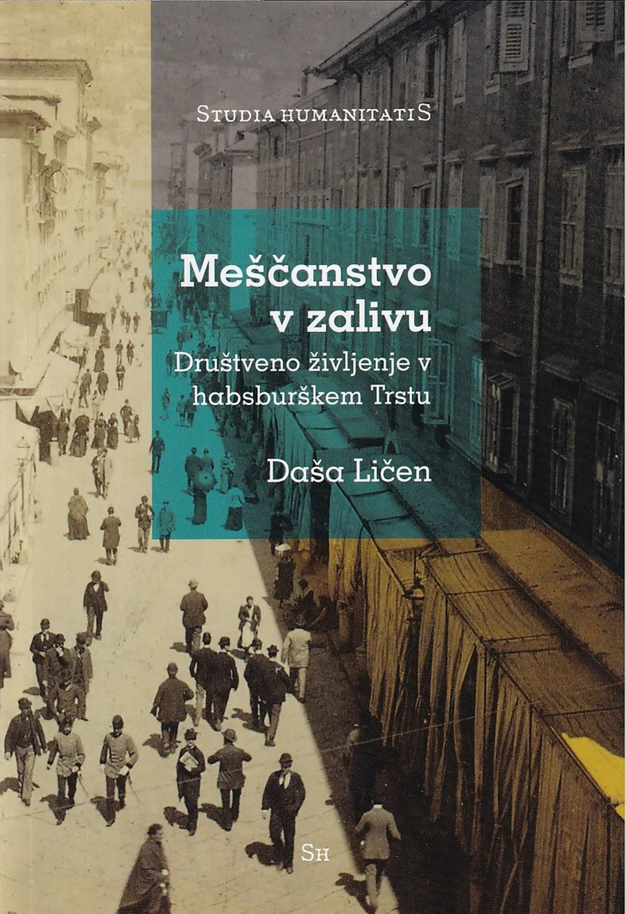

1Trst 19. stoletja je bil eno najpomembnejših pristaniških mest habsburškega cesarstva. V stoletjih se je mesto spremenilo v eno najpomembnejših trgovskih, kulturnih in političnih središč v regiji, njegov pomen pa je izhajal iz strateške lege na Jadranskem morju, zaradi česar je bil tudi glavni pomorski izhod imperija. Trst in njegova okolica predstavljata osrednji prostor raziskav monografije Meščanstvo v zalivu: društveno življenje v habsburškem Trstu Daše Ličen. Avtorica, antropologinja in etnologinja, zaposlena na Inštitutu za slovensko narodopisje ZRC SAZU, se v svojem delu, izdanem leta 2023, osredotoča na tržaško meščanstvo, njihovo društveno življenje ter društveno zapuščino Trsta. S tematiko se je intenzivno ukvarjala že v doktorski nalogi z naslovom Kulturna društva v Trstu kot prizorišče identifikacijskih procesov tržaškega prebivalstva (1848–1914).
2Monografija je sestavljena iz uvoda, sklepne misli in štirih osrednjih delov. V osrednjih štirih delih avtorica predstavi štiri različna društva, ki so delovala v Trstu in njegovi okolici. Gre za Društvo Minerva (1810–1916), Slavjansko društvo (1848–1858), Društvo ljubiteljev živali (1852–??) in Jadransko naravoslovno društvo (1874–1914).
3V uvodnem poglavju avtorica ovrednoti časovni in prostorski okvir monografije, opredeli pojem meščanstva in društva v kontekstu prostora in časa, predstavi meščanski Trst ter društveno življenje tržaškega meščanstva. Prav tako pojasni raziskovalni pristop, različne vplive na raziskovalni poti in metodologijo dela.
4Prvo osrednje poglavje z naslovom Na vijugasti poti nacionalizma: Društvo Minerva (1810–1916) obravnava Društvo Minerva, nastalo leta 1810 in poimenovano po rimski boginji modrosti. Društvo je organiziralo številna predavanja, bralne in debatne krožke o različnih temah. Člani so bili predvsem meščani, tudi predstavniki elite, tisti, ki so bili zdravniki, so odprli ambulanto za revne in organizirali cepilne dneve. Avtorica predstavi namen ustanovitve Društva Minerva, članstvo in delovna društva v dolgem 19. stoletju. Poseben poudarek posveti razpravi o ideoloških spremembah znotraj društva v povezavi z nacionalnim konfliktom, ki je postal vsakdanja težava tistega časa, in prehodu društva od lojalnosti habsburški monarhiji do identifikacije in ideološke povezave z idejo t. i. iredentizma.
5V drugem poglavju, Prvo društvo tržaških Slovencev? Slavjansko društvo (1848–1858), sledita pregled in ovrednotenje Slavjanskega društva, ki je nastalo leta 1848, v času marčne revolucije. Člani društva so bili predvsem tržaški Slovani, med njimi pa ni bilo nobene ženske. Društvo je imelo pretežno izobraževalno vlogo, predvsem za slovanske prebivalce habsburškega imperija. Izdajali so tudi dva mesečnika – Slavjanski rodoljub in Jadranski Slavjan. Po avtoričinih besedah društvo naj ne bi zastopalo kolektivnega stališča tržaških Slovanov, saj naj bi združevalo le njihov manjši del, kljub temu pa se avtorica, v kontekstu društva, posveti idejam panslavizma, avstroslavizma, ilirizma in povezovanju z različnimi jugoslovanskimi gibanji.
6V tretjem poglavju z naslovom Na misiji civiliziranja: Društvo ljubiteljev živali (1852–19??) predstavi Društvo ljubiteljev živali, ki je nastalo leta 1852 in je eno prvih takšnih društev, ki so se borila za pravice živali. Članstvo v društvu je izhajalo predvsem iz višjih družbenih slojev, člani pa niso prihajali le iz tržaške regije, kjer je društvo nastalo. Društvo se je sprva imenovalo Tržaško društvo za zaščito živali in je že ob nastanku pritegnilo 500 ljudi. Veljalo je za dobrodelno, njegovi glavni nameni pa so bili promocija boljšega ravnanja z živalmi, boj za njihovo enakopravnost in prizadevanje za izboljšanje njihovih življenjskih okoliščin. Avtorica posebej poudari žensko članstvo v društvu. Članice so bile predvsem predstavnice elite, ki naj bi imele, kot bolj čuteča bitja, v društvu ključno vlogo. Kljub poudarku pomembne vloge žensk v dobrodelnih organizacijah pa je avtorica mnenja, da je ta le delno povezana z emancipacijo žensk v družbi. Društvo je delovalo po načelu kritik, sramotenja in kazni, objekt nadzora pa so bili predvsem člani nižjih slojev, zlasti kmečkih in delavskih.
7Četrto in zadnje osrednje poglavje – »Republika znanosti«: Jadransko naravoslovno društvo (1874–1914) – predstavi Jadransko naravoslovno društvo, ki je nastalo leta 1874, njegov cilj pa je bil raziskovati Jadransko morje, njegovo vzhodno obalo in različne vidike naravoslovne znanosti. Član društva je lahko postal vsak, ki se je zanimal za katerokoli smer naravoslovja. Pridruževali so se mu predvsem meščani in različni izobraženci, ki jih je združevala ljubezen do naravoslovja. Društvo je imelo tudi izobraževalno komponento, saj je organiziralo številna izobraževanja, predavanja in ekskurzije, na katerih so člani predstavili svoje raziskave in delo. Sklenjeno je imelo široko mrežo povezav z drugimi podobnimi društvi, organizacijami in izobraževalnimi ustanovami po habsburški monarhiji, kar je članom omogočalo medinštitutsko povezovanje in izmenjavo materialov ter znanja. Avtorica predstavi delovanje društva, njegove medinštitutske povezave, osredotoči pa se tudi na posamezne člane društva in njihovo društveno udejstvovanje.
8Pri raziskovanju je avtorica uporabila številčno arhivsko gradivo. Obiskala je več arhivov, kot so Državni arhiv v Trstu, Splošni arhiv mesta Trst, Arhiv Narodne in študijske knjižnice v Trstu, ter Mestno knjižnico Attilia Hortisa. Poleg italijanskih arhivov je obiskala tudi arhive v Avstriji in Sloveniji, kot sta Splošni upravni arhiv na Dunaju in Arhiv Republike Slovenije. Uporabila je tudi številne društvene revije, splošno tržaško časopisje ter obsežen seznam raznolike literature tujih in slovenskih poznavalcev. Delo je opremljeno tudi z nekaj fotografijami.
9Monografija je pripravljena sistematično in je lahko berljiva. Predstavlja poglobljen pregled izbranih društev, ki so delovala na Tržaškem, njihovega članstva, namena in delovanja ter društvenega življenja prebivalstva v tržaški regiji. Kot avtorica v sklepni misli pove tudi sama, je bil cilj monografije prikazati dinamiko socialnih in kulturnih procesov prebivalstva v Trstu v zadnjem stoletju habsburške monarhije. Poudari raznolike ideje, ki so zaznamovale vsakdan obravnavanega časa – od nacionalističnih gibanj, vloge žensk v družbi in društvih, pravic živali, demokratizacije do jezikovnih in ideoloških konfliktov ter njihove vloge in razvoja v društvenem življenju. Monografija in avtoričina raziskava predstavljata pomemben prispevek k raziskavi Trsta v obdobju pomembnih družbenih sprememb.